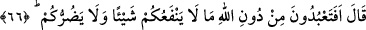

Kâşifî der ki: “Utanç ve kıskançlıklarından başları önlerine düştü.”
et-Te’vîlâtü’n-Necmiyye’de şöyle der: “Âyette işâret edilmektedir ki her insanın bir
aklı vardır. Eğer aklına mürâcaat etse ve kendi hâlini düşünse durumunun düzgün mü
bozuk mu olduğunu bilir.”
Mesnevî’de der ki:
Kötü adam, çapasız gemi gibidir
O gemi, ters esen rüzgârdan güvende değildir
Akıl sâhibinin güvencesi akıl çapasıdır
Akıl sâhiplerinden böyle bir çapa dilen
Buradaki bir işâret de şudur: Her ne kadar akıl iyiyi ve kötüyü bilse de, hak ile bâtılı
ayırt etse de onun için Allâh’ın nûrundan bir te’yid ve tevfîk olmadıkça kendi başına
iyiliği tercîh etmeye ve kötülükten sakınmaya güç yetiremez. Nemrûd’un kavmi gibi
şaşırır kalır. Nitekim onlar eski inançlarına ve tartışmalarına döndüler. Çünkü muvaffak
kılınmadılar. Bilip tanıdıkları hakkın onlara bir faydası olmadı.
Mesnevî’de der ki:
İnâyet dışında gözü kim açar?
Muhabbet dışında öfkeyi kim dindirir?
Dünyada tevfiksiz çabayı Allah kimseye vermesin
Allah en doğru olanı bilendir
Hz. İbrahim’in suçluyu putların söylemesini istemesine binâen: “Sen bunların
konuşmadığını pek âlâ biliyorsun.” dediler.” Yâni ey İbrâhim, sen onların
konuşmadığını bilirsin. O halde nasıl olur da bunlara sormamızı istersin? Böylece onlar
bu soru ile içine düştükleri şaşkınlığı ikrâr ettiler.
66. İbrahim dedi ki: “Öyleyse Allâh’ı bırakıp da, size hiçbir fayda ve zarar
vermeyen bir şeye hâlâ tapacak mısınız?
“Hz. İbrahim” puta tapanları susturmak üzere “Öyleyse Allâh’ı bırakıp da,”
kendilerine ibâdet ettiğinizde “size hiçbir fayda ve” etmediğinizde hiçbir “zarar
vermeyen bir şeye” böyle olduğunu bilip de “hâlâ tapacak mısınız?” dedi.”
Bir şeyin ulûhiyyete uygun olmayan bir durumunu bilmek, kesinlikle ona ibâdetten
sakınmayı gerektirir.